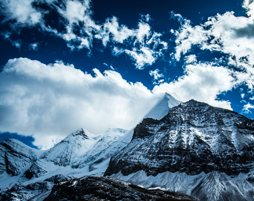
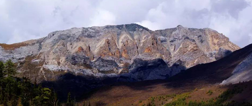

文化特色
1.藏族宗教文化： 稻城亚丁是西藏文化与藏传佛教的宝库，这里有许多闻名于世的寺庙和文化遗迹。 著名的亚丁禅院是当地最重要的寺庙之一，其宏伟的建筑和独特的佛教文化令人叹为观止。 稻城亚丁还保留了丰富多样的藏族传统文化，包括传统音乐、舞蹈、手工艺品等。
2.民间艺术： 藏族歌舞、唐卡绘画、雕刻艺术等民间艺术形式丰富多彩，体现了藏族人民的生活哲学和审美情趣。
3.传统节日： 如藏历新年、雪顿节、灯节等，这些节日中会有丰富的民俗活动和宗教仪式。
4.藏族服饰： 藏族的传统服饰色彩鲜艳，材质多样，反映了藏族人民的生活习惯和审美特点。
5.自然崇拜： 稻城亚丁地区的藏族人民崇尚自然，对山川、湖泊、森林等自然景观有着深厚的情感。
6.藏族建筑： 藏族民居和寺庙的建筑风格独特，如白塔、经幡、玛尼堆等，都是藏族文化的重要组成部分。
- 
- 